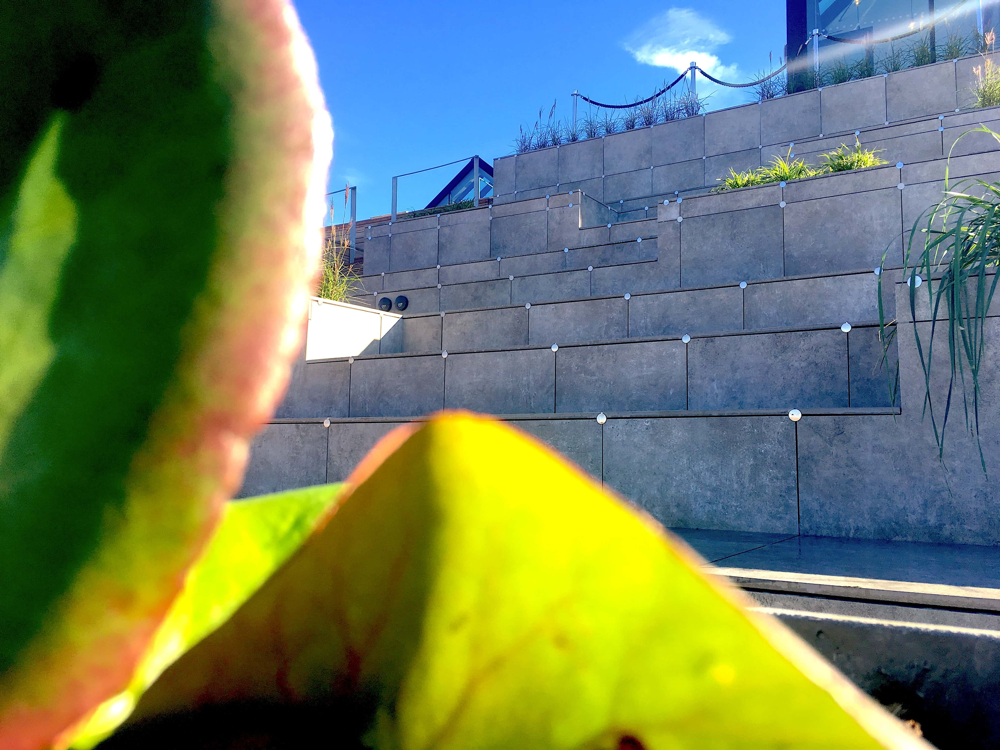

Case 1.1: Århus Kulturhovedstad
Salling Rooftop
Refleksion
Case 1.1 er den første af de 3 større cases, som har været en del af 1. Semesters grundsten. I denne case, foregik udarbejdelsen af casens problemstillinger som et gruppeprojekt. Casen bestod af en opgave, som lød på, at vi som gruppe, skulle finde en virksomhed, som har forbindelse til Århus Kulturhovedstad 2017, hvorefter det var vores opgave, at designe og producere et website til den valgte virksomhed. I denne case valgte min gruppe og jeg at arbejde med Salling Rooftop.
Design Case 1.1
Case 1.1 var den første større opgave, hvor vi som gruppe skulle udarbejde et helt nyt design, som en del af at producere et website til vores virksomhed. På dette tidspunkt var vores viden omkring designfaget begrænset. Et eksempel på vores begrænsede viden om faget, kan findes i forarbejdet af designelementerne til websitet. Måden hvorpå vi designede vores hjemmeside, vil på ingen måder være tilstrækkelig, i forhold til de krav, som bliver stillet nu, både fra sig selv, men også fra underviserne. Websitet for Salling Rooftop er designet direkte via kodning, det vil sige, at der ikke er udarbejdet hverken moodboards, mockups, logoprocess eller andet, hvilket understreger den begrænsede viden vi havde om faget på dette tidspunkt. Manglen på mockups er den mest graverende mangel, da det gør processen for udarbejdelse af et website kompliceret, hvilket den også bære præg af. Manglen af mockups medfører endvidere, at udarbejdelsen af hjemmesiden, rent kodnings-mæssig, kommer til at tage længere tid, og dermed bliver designet ikke, som man ønsker det skal være. På trods af manglen på elementære designelementer, er det endelige website blevet et nogenlunde produkt, taget i betragtning af, at det er udarbejdet tidligt på 1. Semester, og vores manglende viden.
Interaktion case 1.1
Interaktionsfaget er uden tvivl det fag, som der blev brugt længst tid på i forbindelse med udarbejdelsen af produktet i case 1.1. Der kan findes mange grunde til, hvor det netop er dette fag, som der er brugt mest tid på, herunder er det blandt andet, at den manglende designproces gør det kompliceret at kode, men den vigtigste faktor er vores evner indenfor kodning, som på dette tidspunkt ikke er særlig langtrækkende. I forbindelse med case 1.1, tog det lang tid, at få elementære og simple elementer på plads, elementer som i dag blot tager nogle minutter at
producere. Der blev brugt meget tid på, at finde ud af hvordan vi kunne rykke rundt på elementerne på websitet, finde ud af hvordan vi placere dem på de ønskede lokationer og især navigationen på websitet tog lang tid at udvikle. Interaktionsdelen bærer stort præg af manglende viden, men i ligeså høj grad af, at der i designprocessen ikke er udarbejdet et mockup af sitet.
Kommunikation og virksomhed case 1.1
Ud fra det visuelle på det udarbejdede website, er det ikke muligt, som sådan at vurdere vores, på dette tidspunkt begrænsede viden omkring de to fag, men med baggrundsviden omkring projektet, er det nemt at finde mangler, som i dag ville være uacceptabelt. Herunder er der hverken lavet kortsortering, som kunne have optimeret vores userexperience, der er ikke lavet dybdegående analyser af virksomheden, med relation til fagene og der mangler derfor meget viden om selve virksomheden. En af de vigtige bestanddele i forhold til de to fag er dog blevet opfyldt, nemlig interviews med Salling Rooftops kunder. Interview-delen er et vigtigt element i forhold til udarbejdelsen af websitet, da det er ud fra interviews, man oplever hvem kunden er, hvilken målgruppe de er, hvad de forventer af stedet, og ud fra dette kan man i langt højere grad udarbejde et produkt, som passer til målgruppen, så på det punkt opfylder case 1.1 fuldt ud det der skal til, men det er vigtig at huske på, at på trods af der er blevet lavet interviews, så var vores evner til at arbejde og udnytte disse interviews langt fra på det niveau som de er i dag.
Konklusion for case 1.1
Taget i betragtning at case 1.1 var det første projekt vi udarbejde, er produktet veludført, da det opfylder de krav, som på daværende tidspunkt var gældende, men med den viden der besiddes nu, er det tydeligt at der mangler mange elementer før produktet er tilfredsstillende, og i forhold til de krav der stilles nu, både fra underviser, men også fra en selv, ville produktet og projektet skulle have været langt mere udarbejdet, og der skulle have været en langt mere omfangsrig og dybdegående forarbejdelse, før produktionen af det egentlige produkt begyndte, da det ville have resulteret med et bedre produkt. På trods af manglerne og manglende erfaring er produktet i frohold til kravene tilfredsstillende, men med tydelig mangel på viden indenfor fagene.